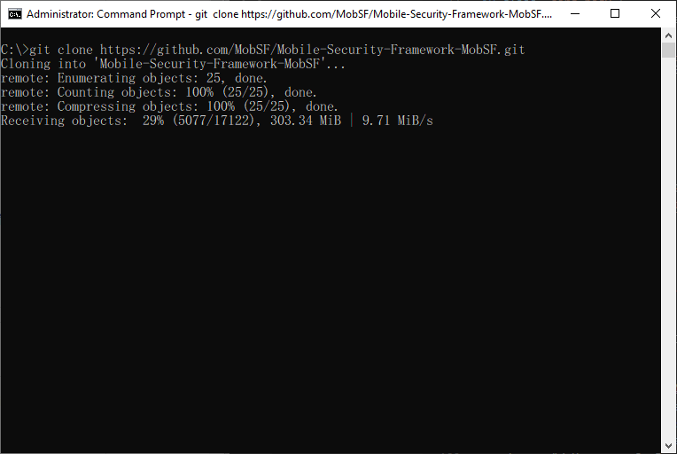
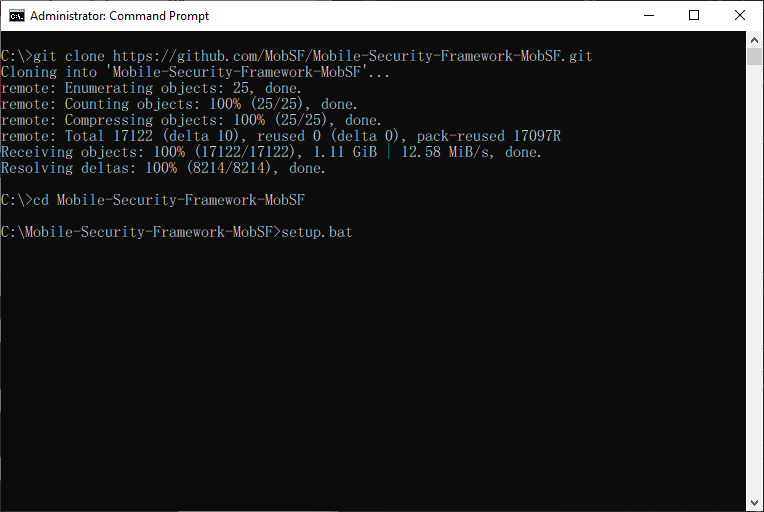

AHI CTF

#Mobile Security Framework (MobSF)
Mobile Security Framework (MobSF) คืออะไร

Mobile Security Framework (MobSF) เป็นเครื่องมืออัตโนมัติที่ใช้ในการวิเคราะห์ และตรวจสอบความปลอดภัยของ Mobile Application ซึ่งสามารถทำการวิเคราะห์ได้ทั้งแบบ Static analysis และแบบ Dynamic analysis โดย MobSF รองรับไฟล์ดังต่อไปนี้
- APK
- XAPK
- IPA
- APPX
พร้อมยังรองรับ Code แบบไฟล์ ZIP อีกด้วย ซึ่ง Dynamic Analyzer ช่วยให้คุณทำการประเมินความปลอดภัยรันไทม์และการทดสอบเครื่องมือเชิงโต้ตอบ สามารถศึกษาเพิ่มเติมได้จากลิ้งด้านล่าง

ขั้นตอนการติดตั้งบนระบบปฎิบัติการ Windows
- ใช้คำสั่ง Git เพื่อทำการ Clone ไฟล์มายังเครื่องด้วยคำสั่ง "git clone https://github.com/MobSF/Mobile-Security-Framework-MobSF.git" 
- ทำการเข้าไปยัง Folder และใช้คำสั่ง "setup.bat" เพื่อทำการติดตั้ง และรอจนกว่าจะทำการติดตั้งเสร็จ 
โปรแกรมดังต่อไปนี้ เป็นโปรแกรมในการจำลองการทำระบบ Login ในรูปแบบที่ง่าย
ซึ่งถ้าหากใส่ Username กับ Password ที่ไม่ถูกต้องจะมีการแจ้งเตือนขึ้นมา

ซึ่งถ้าหากใส่ Username กับ Password ที่ถูกต้องจะมีการแสดงข้อความเข้าสู่ระบบสำเร็จ และมีการแสดงฟอร์มขึ้นมาใหม่


dnSpy
โปรแกรมที่มีชื่อว่า dnSpy ซึ่งเป็นโปรแกรมที่ไว้ใช้สำหรับการทำ Reverse engineering ซึ่งโปรแกรมดังกล่าวมีคุณสมบัติดังต่อไปนี้
- Debug .NET and Unity assemblies
- Edit .NET and Unity assemblies


วิธีการ Crack โปรแกรมที่เขียนด้วยภาษา VB.NET
ในช่วงนี้จะสอนเกี่ยวกับขึ้นตอนการ Crack โปรแกรมที่ไม่มีการเข้ารหัส Code ไว้ที่เขียนด้วยภาษา VB.NET ด้วย dnSpy โดยในที่นี้เราจะใช้โปรแกรมที่เราจำลองขึ้นมาในข้างต้น เราจะจำลองว่าถ้าเราไม่มี Username กับ Password เราจะสามารถผ่านหน้า Login ไปได้หรือไม่
- ดำเนินการเปิดโปรแกรม dnSpy
- เลือกโปรแกรมที่ต้องการจะทำการ Crack
- เลือกภาษาเป็น Visual Basic
- กดตรงแท็ปซ้าย ทำการเปิด Dropdown ลงมาเรื่อยๆ เพื่อหาส่วนของการทำงานเกี่ยวกับการ Login
- เราก็จะเห็นว่ามีการตรวจสอบ Username กับ Password ซึ่งให้เท่ากับ saran.kaewnang และ 123456 ตามลำดับ ซึ่งเราก็สามารถนำค่าที่ได้มาไป Login ได้สำเร็จ
- หรืออีก 1 วิธีโดยเราสามารถแก้ Code ดังกล่าวเพื่อทำการ ByPass หน้า Login ไปได้ โดยทำการคลิกขวาเลือก Edit Method
- เราจะเห็นว่าสามารถแก้ไข Code ได้ ซึ่งดูจากการทำงานของ Code ดังกล่าว เมื่อมีการเข้าสู่ระบบที่สำเร็จจะมีแสดง Frm_Main ด้วยคำสั่ง "MyProject.Forms.Frm_Main.Show()"
- ดำเนินการแก้ไข Code ให้ทำการเปิด Frm_Main โดยที่ไม่จำเป็นต้อง Login โดยลบทุกอย่างออกเหลือไว้แค่ "MyProject.Forms.Frm_Main.Show()" และกด Compile
- หลังจากนั้นให้ทำการ Save ALL โปรแกรมที่เราได้ทำการ Crack
- จากนั้นเราจะเห็นโปรแกรมที่เราได้ทำการ Crack มา
- ทำการทดสอบใช้งานโปรแกรมดังกล่าว ทำการกดปุ่ม Login จะสังเกตเห็นว่าสามารถเข้าใช้งานได้เลยโดยไม่จำเป็นจะต้องมี Username และ Password